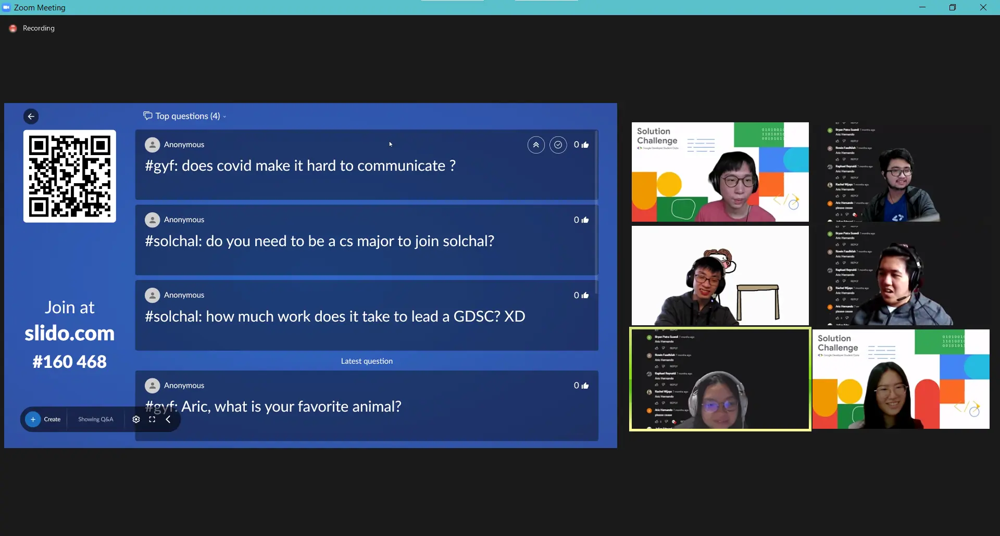
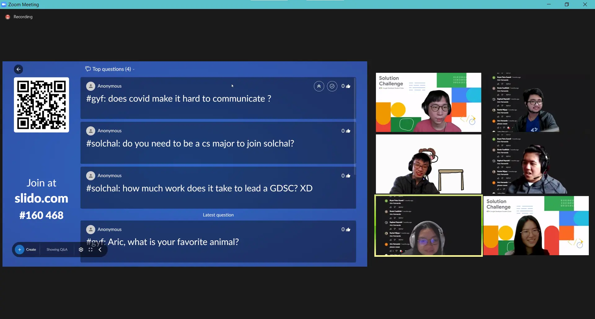

Alright, alright, alright. We've been hyping up the Google Solution Challenge for a while now and we're sure all of you want a little bit more insight ü§î and info ‚ÑπÔ∏è on the competition, so we're about to have another Info Session!
Of course
we'll be talking about the Solution Challenge, but we'll also be hosting some very special ‚≠ê and honored guests...The team behind last year's üèÉ‚Äç‚ôÇÔ∏è "Game Your Fit", which made it into the Top 10! The team consists of Aric Hernando, Jason Jeremy
W., Monique Senjaya, and Jason Christian H.
 
